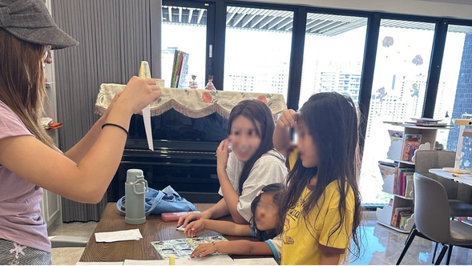

企業概論課程

在企業概論課程中,我和組員一起規劃桃園觀光行程,調查景點,交通方式及旅遊費用。
我主要負責製作PPT和Instagram宣傳,透過設計照片及撰寫貼文,將粉絲人數從約10人增加到100人。
這次經驗讓我學習到簡報設計、社群行銷及團隊合作的重要性。
在企業概論課程中,我和組員一起規劃桃園觀光行程,調查景點,交通方式及旅遊費用。
我主要負責製作PPT和Instagram宣傳,透過設計照片及撰寫貼文,將粉絲人數從約10人增加到100人。
這次經驗讓我學習到簡報設計、社群行銷及團隊合作的重要性。

我認為日語和中文是自己的優勢，因此開始教台灣學生日語，目前有四位學生。
我希望透過教學，發揮自己的語言能力，也讓自己不斷進步。在與學生交流的過程中，我的中文溝通能力也得到了提升。
這次經驗讓我學到，要先了解自己的優勢，再透過實際行動發揮並提升自己的能力。

對中文和台灣產生興趣後，我馬上開始上中文補習班，並自己查詢台灣的大學資訊，最後決定來台灣留學。
現在我已經是中原大學資訊管理學系的二年級學生。這次經驗讓我學到，很多事情只要願意嘗試，就有機會做到。
因此，與其因為害怕而猶豫，不如在有興趣的時候勇敢採取行動。